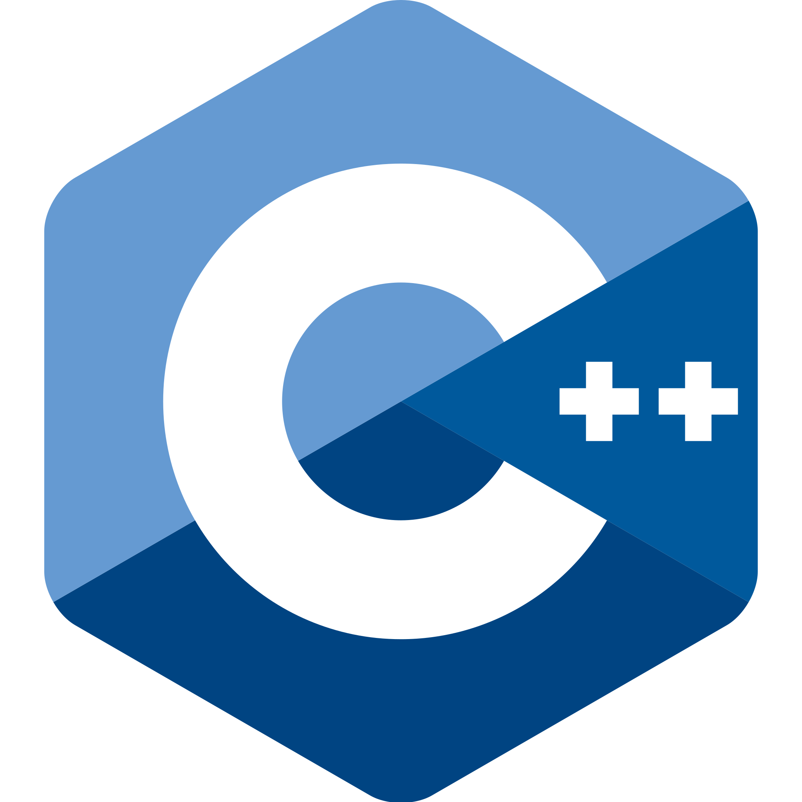
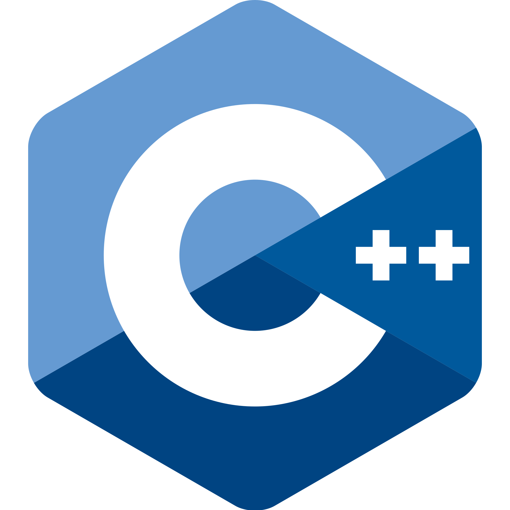
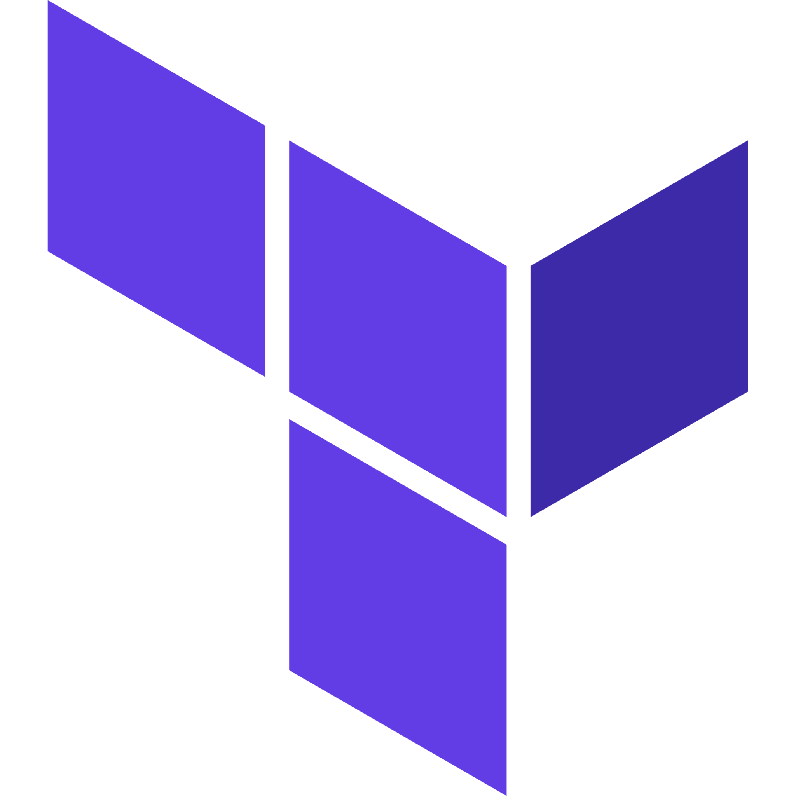
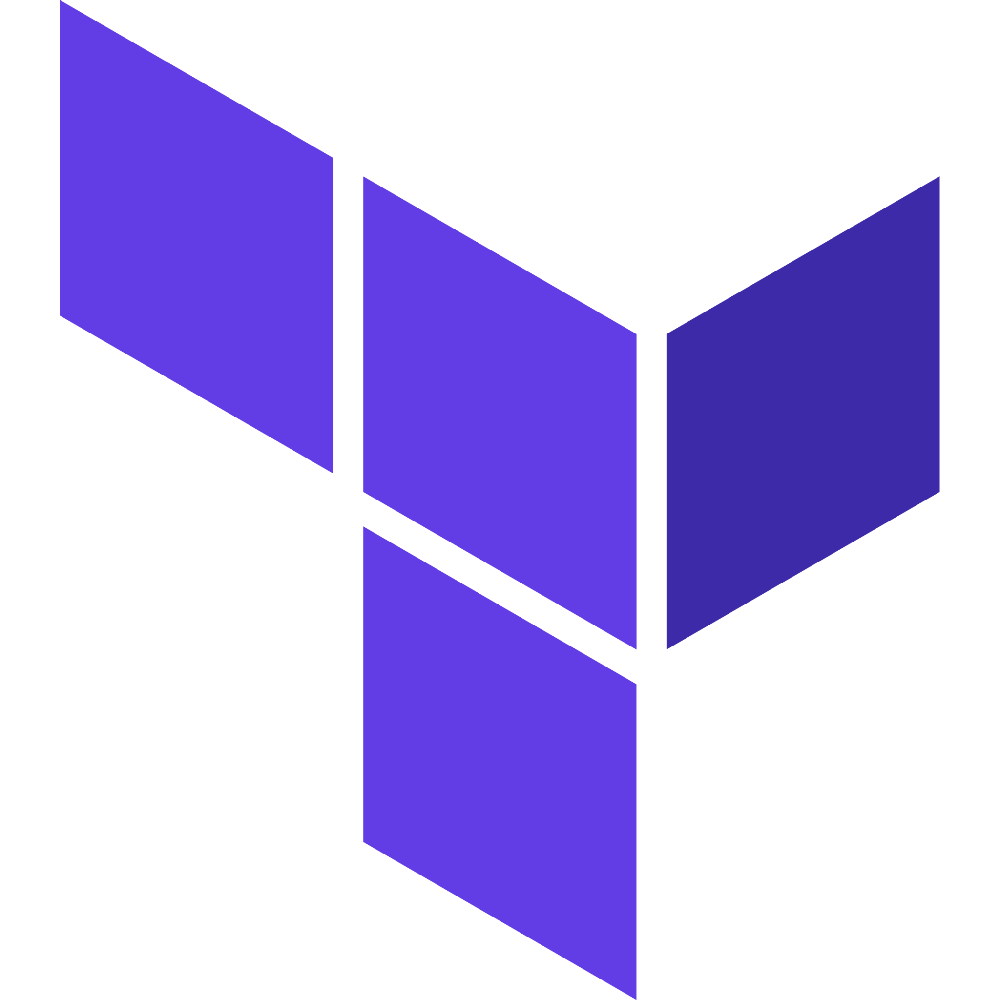

Matthew Cheng
Software Engineer | Student
Passionate about problem-solving and creativity, Pursuing an MCS in Data Science at UIUC, Software Engineer at JPMorgan Chase.
About Me
I am currently enrolled in the online Master of Computer Science program at UIUC, specializing in Data Science. My academic journey began at the College of William and Mary, where I graduated summa cum laude with a double major in Computer Science and Data Science, focusing on Data Applications.
Driven by a passion for problem-solving and creativity, I started my career as a Software Engineer I at JPMorgan Chase through the Software Engineer Program (SEP). In this role, I am constantly challenged and inspired to innovate.
I have a deep love for learning and creating and I always strive to improve my skills. I enjoy writing clean, efficient software and I am particulator passionate about Cloud Computing, Big Data, and Machine Learning.
Beyond the realm of technology, I find joy in watching and playing sports, gardening, and playing games — both the video and board varieties.
My ultimate goal is to utilize my expertise in computer science and data science to drive positive change in the world. I am committed to continuous learning and aspire to push the boundaries of technology, always seeking new ways to make a meaningful impact on society.
Skills
Languages

 


Frameworks

Tools
 

Certifications

Experience
Software Engineer I - JPMorgan Chase & Co.
Wilmington, DE
08/2023-Present
Development and deployment of data migration pipelines, using AWS services, such as Step
Functions, Lambda Functions, S3, and AWS Glue, as well as Terraform, Snowflake, and Apache Spark.
Worked closely with data owners, stakeholders, and other data teams to ensure quality and efficient
pipelines.
Volunteered for the Food Bank of Delaware to integrate Salesforce CRM with their existing tech stack,
saving the organization both time and money.
Served as a mentor to early career software engineers and interns to offer guidance and advice.
Application Development Intern - ADP
Norfolk, VA
06/2022-08/2022
Engineered and deployed a full stack RESTful API using Python, JavaScript, Flask, Docker, and Kubernetes to
serve Network Operations and Management purposes.
Automated various tasks for the ADP Networking Team through Python scripts, including software removal and
switch port configuration.
Software Development Intern - SitScape
Remote
05/2021-07/2021, 02/2022-05/2022
Worked on DEEP software platform, conducting thorough software testing, resolved bugs, and implemented
frontend and backend features to enhance user experience.
Pioneered the company's integration of React components.
Contributed to the development of video tutorials and a database of UI feature descriptions to aid future
employees and customers.
Projects
Games
2048
A full implementation of the game 2048, including the regular gamemode, a "smart" autosolver, and a "random" autosolver.
Connect Four
A full implementation of the game Connect Four. This includes a two player option, where players should alternate control of the cursor, as well as a one player option, where the user plays against an AI.
Maze Game
This game automatically generates mazes for either the user or a robot to solve. These mazes vary in color and increase in size depending on the level of difficulty. If the user decides to let a robot solve the maze, there are different robot settings to choose from that can greatly impact the abilities of the robot.
Tower Defense
This work in progress project uses pygame to create a tower defense game where the player can place towers to defend against various enemies across different gamemodes. Towers have different abilities and get stronger as they level up. If the player runs out of health, they lose!
Web Development
This Site (Github Pages)
A simple github pages site that I created using HTML, CSS, Javascript, and React. The purpose of this site is to show off some of my projects, skills, and experiences. It's also a way to learn a bit more about me. Feel free to contact me if you're interested in connecting or learning more!
Tools
Bloc
A React Web App that I created with a group of other students for our Entrepreneurship class. This demo project was made to showcase the power of an all-in-one service for students that acts as a club database, calendar, event planner, and club recommender. It is intended to simplify the process for joining clubs and organizations as well as participating in or creating scheduled events.
CodeProbing
This is a private Python Library for evaluating the quality of Neural Code Models. This library will determine how well the model performs in four categories, including robustness, logical consistency, taxonomy, and vocabulary.
Data Science
Customer Churn Forecasting
A comprehensive comparison study that delves into the realm of predictive analytics for a telecommunications company. Using anonymized customer churn data, this project explores different machine learning techniques to predict customer churn effectively. The study employs a diverse set of models, including Generalized Additive Modeling, Nadaraya-Watson Estimator, Deep Learning, DenseNet, and Random Forest Classifier.
Lung Cancer Detection
A deep learning project that leverages transfer learning to explore the intersection of healthcare and technology by attempting to accurately detect lung cancer in CT Scans. Although the dataset for this project was not expansive, it acts as a proof of concept for easing the overwhelming task of CT Scan analysis for doctors.